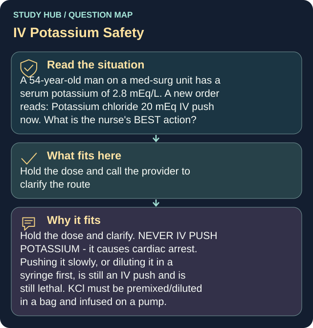

A 54-year-old man on a med-surg unit has a serum potassium of 2.8 mEq/L. A new order reads: Potassium chloride 20 mEq IV push now. What is the nurse's BEST action?
Answer
Hold the dose and call the provider to clarify the route
Reasoning
Hold the dose and clarify.
Clinical detail
NEVER IV PUSH POTASSIUM - it causes cardiac arrest. Pushing it slowly, or diluting it in a syringe first, is still an IV push and is still lethal. KCl must be premixed/diluted in a bag and infused on a pump.
Why the other answers do not fit
- Give the dose slowly over 2 minutes while watching the cardiac monitor
- Give the dose, then recheck the potassium level in 1 hour
- Dilute the dose in 10 mL of normal saline and push it over 5 minutes
Shared reasoning for choices without a separate note: Hold the dose and clarify. NEVER IV PUSH POTASSIUM - it causes cardiac arrest. Pushing it slowly, or diluting it in a syringe first, is still an IV push and is still lethal. KCl must be premixed/diluted in a bag and infused on a pump.
